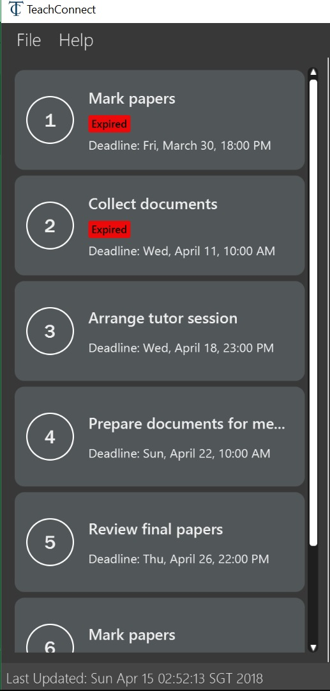
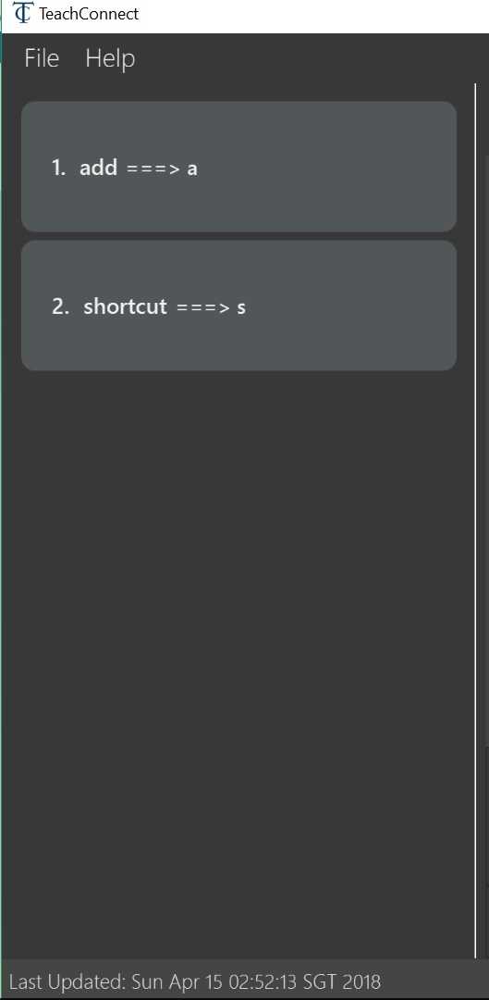

Project: TeachConnect
TC is created to help teachers and other educational professionals better manage their contacts and remember their past students. It is tailored for teachers/educational professionals who would prefer to use a Desktop App for managing contacts especially for those who prefer to work with a Command Line Interface (CLI) while still having the benefits of a Graphical User Interface (GUI). If you can type fast, TC will manage your contacts in the wink of an eye!
Code contributed: [Functional code] [Test code]
Listing all contact/task/appointment/student : list
Shows a list of all of the specified TYPE.
Format: list TYPE.
Examples:
-
list students
Lists all student.
Figure 9: Student List displayed as active list
-
list tasks
Lists all task.Figure 10: Task List displayed as active list
-
list appointments
Lists all appointment.Figure 11: Appointment List displayed as active list
-
list shortcuts
Lists all command shortcuts.Figure 12: Shortcut List displayed as active list
End of Extract
Justification
Teachers or even educational professionals in general have a lot on their hand. When it comes to saving their personalised shortcuts for commands they want, there is a high probability that they forget the shortcut they assigned.
Showing a list of the shortcut words and the commands to which they have assigned this word will be highly useful for them.
Personalised Shortcut
Current Implementation
The personalised shortcut uses a ShortcutDouble to hold the shortcut word and the command word. There is a UniqueShortcutDoublesList to which these ShortcutDoubles are added. The comparator in the ShortcutDouble accounts to check for any duplicates in the UniqueShortcutDoublesList. This list is then added to the addressbook.xml so as to load the shortcuts on initialisation. Below is a short code snippet of the constructor of the ShortcutDouble:
public ShortcutDoubles(String shortcutWord, String commandWord) {
this.shortcutWord = shortcutWord;
this.commandWord = commandWord;
}This ShortcutDouble is called using the ShortcutCommand. Below is the constructor to the ShortcutCommand:
public ShortcutCommand(String commandWord, String shortcutWord) {
this.shortcutWord = shortcutWord;
this.commandWord = commandWord;
}Shortcut command extends UndoableCommand and hence is undoable. It initially calls a filtered commandsList to which a new ShortcutDouble is added if it passes all validity checks.
There is a check to find if the command is already present and the method used for this is called checkIfCommandPresent().By default it returns false.
You can also choose to list all the shortcuts created until now. This displays the UniqueShortcutDoublesList instead of the contacts in the list panel. A high level sequence diagram is given below :

Figure 21: List Shortcut High Level Sequence Diagram
As of now the conditions to take note of are:
* Shortcut can be only one word.
* The command word should already exist.
* New commands are to be added in the commandsPresent String array of ShortcutCommand class.
Design Considerations
Aspects : Implementation Shortcut Command
-
Alternative 1: Restricting the number of aliases of a command word.
-
Pros: Allows for setting up a shortcut word there by increasing the usability of the app.
-
Cons: Wouldn’t help much if the user keeps forgetting the shortcut word too because if there is only one shortcut alias and the user might forget it.
-
-
Alternative 2 (current choice): Allowing multiple number of shortcut words for a single command word
-
Pros: User can create multiple aliases there by giving the user more personalisation and the flexibility of forgetting the words as he can create more of them.
-
Cons: Need to consider several cases for duplicate shortcuts and maintain a dynamic list without forgetting the shortcuts when the app is closed without hardcoding the shortcut word into each command.
-
End of Extract
Adding your own shortcut : shortcut
Sets your own personal shortcut for any of the commands above.
Format: shortcut [command word] [shortcut word]
|
You can choose multiple shortcuts for the same command. You can later use these shortcuts in place of the original command even after closing and reopening the app. You can also set shortcut for the shortcut command. |
|
You cannot set the shortcut word to a already preregistered command. Your shortcut word cannot be more than a single word. |
You can always see the list of shortcuts you set using list shortcuts as shown in the figure below.
Figure 13: List of shortcuts stored
Examples:
-
shortcut list l
Setslas the Personalised Alias forlistcommand. -
shortcut add a
Setsaas the Personalised Alias foraddcommand.
End of Extract
Justification
TeachConnect comes with a lot of features and each feature has its own command word. The most gruelling part is remembering the exact commmand word as stated in the user guide. To overcome this the shortcut command helps keep aliases to the commands there by helping teachers better remember the command words they are comfortable with.
This also eliminates the need for a common shortcut word which many teachers might not be comfortable with. Hence this command is a twist of personalisation packed with the essence of comfort.
Personalised Shortcut
Current Implementation
The personalised shortcut uses a ShortcutDouble to hold the shortcut word and the command word. There is a UniqueShortcutDoublesList to which these ShortcutDoubles are added. The comparator in the ShortcutDouble accounts to check for any duplicates in the UniqueShortcutDoublesList. This list is then added to the addressbook.xml so as to load the shortcuts on initialisation. Below is a short code snippet of the constructor of the ShortcutDouble:
public ShortcutDoubles(String shortcutWord, String commandWord) {
this.shortcutWord = shortcutWord;
this.commandWord = commandWord;
}This ShortcutDouble is called using the ShortcutCommand. Below is the constructor to the ShortcutCommand:
public ShortcutCommand(String commandWord, String shortcutWord) {
this.shortcutWord = shortcutWord;
this.commandWord = commandWord;
}Shortcut command extends UndoableCommand and hence is undoable. It initially calls a filtered commandsList to which a new ShortcutDouble is added if it passes all validity checks.
There is a check to find if the command is already present and the method used for this is called checkIfCommandPresent().By default it returns false.
You can also choose to list all the shortcuts created until now. This displays the UniqueShortcutDoublesList instead of the contacts in the list panel. A high level sequence diagram is given below :
Figure 21: List Shortcut High Level Sequence Diagram
As of now the conditions to take note of are:
* Shortcut can be only one word.
* The command word should already exist.
* New commands are to be added in the commandsPresent String array of ShortcutCommand class.
Design Considerations
Aspects : Implementation Shortcut Command
-
Alternative 1: Restricting the number of aliases of a command word.
-
Pros: Allows for setting up a shortcut word there by increasing the usability of the app.
-
Cons: Wouldn’t help much if the user keeps forgetting the shortcut word too because if there is only one shortcut alias and the user might forget it.
-
-
Alternative 2 (current choice): Allowing multiple number of shortcut words for a single command word
-
Pros: User can create multiple aliases there by giving the user more personalisation and the flexibility of forgetting the words as he can create more of them.
-
Cons: Need to consider several cases for duplicate shortcuts and maintain a dynamic list without forgetting the shortcuts when the app is closed without hardcoding the shortcut word into each command.
-
End of Extract
Deleting your personalised Alias : delete_shortcut
Deletes your personalised Alias if you don’t want them or if you created them by mistake.
Format: delete_shortcut [command word] [shortcut word]
|
You can choose to just undo the delete_shortcut if you delete a shortcut by mistake. Listing all the shortcuts using the list shortcuts command as mentioned above might help in seeing all the shortcuts at once. |
| You can only delete shortcuts that you have already added. |
Examples:
-
delete_shortcut list l
Deletes the Personalised Aliaslforlistcommand. -
delete_shortcut add a
Deletes the Personalised Aliasaforaddcommand.
End of Extract
Justification
Mistakes are bound to happen and as long as teachers are humans there is a chance that they might make a mistake. In cases when a teacher assigns a wrong shortcut word to a wrong command word or wants to erase the shortcut entirely, this delete shortcut command comes in handy.
There is a also a big chance that the assigned number of alias or shortcuts to a certain key word has become huge and the user wants to clear up a few of them. In cases like this too the delete shortcut command is of utmost use.
Deleting Personalised Shortcut
Current Implementation
The ShortcutDouble can be deleted using the DeleteShortcutCommand. The sequence diagram is below :

Figure 22: Delete Shortcut Sequence Diagram
The ShortcutDouble is deleted from the UniqueShortcutDoublesList. It throws a CommandShortcutNotFoundException in case the shortcut is not found. Below is the constructor to the DeleteShortcutCommand:
public DeleteShortcutCommand(String commandWord, String shortcutWord) {
this.commandWord = commandWord;
this.shortcutWord = shortcutWord;
commandShortcut = new ShortcutDoubles(shortcutWord, commandWord);
}DeleteShortcut command extends UndoableCommand and hence is undoable. It calls the method deleteCommandShortcut() in the model class to achieve its objective.
As of now the conditions to take note of are: * DeleteShortcut can only delete a shortcut if the command is already present and the shortcut has been made previously.
Design Considerations
Aspects : Validity of the Delete Shortcut Command
-
Alternative 1: Omit the delete shortcut command.
-
Pros: Would require less implementation considering the fact that the shortcut has been added by the user.
-
Cons: Would not give the user any room for mistake or change of mind as once added it would be not possible to delete it.
-
-
Alternative 2 (current choice): Include the delete shortcut command.
-
Pros: Will give the user the room to make mistake and change the shortcuts if needed. Would also help him in clearing the clutter of shortcuts which would have developed over time.
-
Cons: Will have to take care of various edge cases when the shortcuts are not present and keep modifying the dynamic list. Several relevant exceptions have to be thrown and taken care of.
-
End of Extract
Importing the contacts : import
Imports contacts from a different TeachConnect file by specifying the location of the file. This automatically imports all the students, classes and any other contacts present in the import file.
Format: import pathname
Examples:
-
import ./data/importsample.xml: Import contacts fromimportsample.xml
End of Extract
Justification
Teachers are highly socializable people and there is a high probability that they will want to import contacts from other teachers regarding students' contact details. In contexts like these importing contacts is of utmost importance.
There might also be cases where teachers might take over a class from another teacher and hence it should be made easy to transfer all the student details from one teacher’s TeachConnect to the other teacher’s TeachConnect.
Import Contacts
Current Implementation
The ImportCommand uses XmlAddressBookStorage to generate a temporary AddressBook object from a given path. It takes in a String value path. The command then adds the contacts or the classes found in the temporary AddressBook object into the model. Below is the rough idea of the constructor for the class:
public ImportCommand(String importPath) {
requireNonNull(importPath);
this.filePath = importPath;
addressBookStorage = new XmlAddressBookStorage(filePath);
}
Figure 19: Import command flow chart
Import command extends Undoable Command and hence Undo can be called on it. It also initially checks if the given file path is valid and if so initialises the contacts from there, creates a Person object and adds it to the current TeachConnect with the help of model.For importing classes Class objects are first created and students related to the classes are stored before being added to the model. The code can be found below.
public CommandResult executeUndoableCommand() throws CommandException {
peopleToBeImported(people);
studentToBeImported(students);
classesToBeImported(students, classes);
return new CommandResult(MESSAGE_SUCCESS);
}Design Considerations
Aspects : Implementation Import Command
-
Alternative 1 (current choice): Only import from an
XMLfile.-
Pros: Goes well with the idea of TeachConnect. Easier to implement and also clear distinction of the file that needs to be imported by the user with the help of the .XML extension.
-
Cons: User might want to import from Excel only to realise this isn’t possible.
-
-
Alternative 2: Include import from an
Excelfile too.-
Pros: Might be more intuitive for the user and might come in handy.
-
Cons: Will not really help the user distinguish the exact file to be imported. Care has to be taken so that the input by the user follows a certain format to parse the content properly.
-
End of Extract
Exporting the contacts or classes : export [since v1.4]
Exports contacts from your TeachConnect by specifying the name of the file you want to save it in and the path where you want to save it. It can export the contacts/students based on a given range of indexes or a given tag or a given tag in a range of indexes. Alternatively you can choose to export all the classes with the students in them. By specifying the type of the export you want it saves either only the xml file or the Csv file.
Format: export n/NAME r/RANGE [t/TAG] p/PATH te/TYPE
Format: export classes n/NAME p/PATH te/TYPE
|
You can export all the people at once, all the people with a certain tag at once, all the people with a certain tag in a range at once or all the people in a range with any tags in a single command. You can also choose to export it in Csv format which you can later open in Excel. You can also choose to export all the classes and the students in it using the export class format. |
|
You can only export all or people based on one or zero tags. Be careful about the parameter value for the format type. It has to exactly be either xml or excel.
|
Examples:
-
export n/StudentsFile1 r/all t/students p/./data te/normal:
Exports all contacts with tag student to an xml file namedStudentsFile1in thedatafolder. -
export n/StudentsFile2 r/1,10 t/students p/./data te/excel:
Exports contacts from 1 to 10 with tag students to an excel file namedStudentsFile2in thedatafolder.
End of Extract
Justification
For teachers to share contacts when a new teacher takes up a class or just when a new teacher asks for contact details it is necessary to have the export comand.
Since exporting all of the contacts might be redundant and also neglects some confidential contacts, the export command has the feature of exporting a single person or a range of contacts based on tags or just indexes.
Another very important feature is to export to a CSV file (which can be opened in excel) for them to later create or print Contact Books like the older days address book.
Export Contacts
Current Implementation
The ExportCommand uses XmlAddressBookStorage class to generate a xml file based on a given range/index/tag and save it to the location specified with the chosen file name. It takes in String name String range Tag tag String path String type.It is also possible to export classes with String path String name String type as parameters. The tag is not compulsory and can be excluded or included depending on the user. Below is the basic idea of the constructor for the class:
ExportCommand(String range, Tag tag, String path, String nameOfExportFile, String type) {
this.range = range;
this.path = path;
thispublic.tag = tag;
this.nameOfExportFile = nameOfExportFile;
this.type = type;
teachConnectBook = new AddressBook();
}Figure 20: Export command flow chart
The method handleRange() splits the range using a separator "," and returns a String array with the upper bound and lower bound as values. In some cases it also returns the String all or the single integer index that has to be exported. Based on the type it also exports to an excel format (CSV file) or XML format (XML file).
Below is an extract of the method handleRange():
public String[] handleRange() throws IOException {
String[] rangeStringArray = this.range.split(",");
if (rangeStringArray.length > 2) {
throw new IOException();
}
return rangeStringArray;
}Choosing to export classes follows a different pattern. It exports all the classes and the students related to those classes.
Any range with more than 2 values in the String array returns an IO Exception. There are 4 individual cases when exporting contacts and multiple combinations of these:
-
All (Without a tag)
-
if the word
allis present in the user input, we will just export all the contacts from the last shown list.
-
-
All (With a Tag)
-
if the word
allis present along with a tag specified in the user input, we will just export all the contacts with that particular tag from the last shown list
-
-
Specific index (e.g. 1, 2, 3)
-
if the user input contains a specific index, we will add that index (one-based) to the
teachConnectBook.
-
-
Range of indexes (e.g. 1,5)
-
if the user input contains a range which is identified by the
,character, we will add that range of index (one-based) to theteachConnectBookincluding the lower range but excluding the upper bound.
-
-
Range of indexes (with a tag)
-
if the user input contains a range which is identified by the
,character along with the tag, we will add that range of index (one-based) to theteachConnectBookif that contact contains that particular tag including the lower range but excluding the upper bound.
-
The final step is to create the xml/excel file from the teachConnectBook. This is done with the help of the method tryStorage().
Depending on the type of export it can also be exported to an excel format with the help of Arraylists called exportAdditionPeople, exportAdditionClasses, exportAdditionStudents.
Design Considerations
Aspects : Implementation Export Command
-
Alternative 1: Only export to an
XMLfile.-
Pros: Easier implementation and very helpful for the import command as import can only be done from an XML file.
-
Cons: The exported file might not be very user friendly to read in the xml file format and hence later referencing to the file after exporting can be a nightmare.
-
-
Alternative 2 (current choice): Include export to an
Excelfile too.-
Pros: Might be more intuitive for the user and might come in handy especially when the user wants to print it later or read the contents in a user friendly format.
-
Cons: Complex implementation there by giving rise to more boundary cases to consider.
-
End of Extract
Other contributions
-
Created and set up the team repo including the Travis checks,Coveralls,Auto Publishing and Badges.
-
Managed all Issues and Milestone by managing the project and assigning work.
-
Wrote additional tests to increase coverage.
-
Took the role of Team Leader to make important decisions regarding development of product.
-
Managed GitHub effectively to keep track of issues, merging Pull requests by resolving conflicts and keeping track of deadlines so that the weekly releases are made on time with a working product.
-
Fixed various(5+) bugs in the product including some bugs which existed previously in the product.
Pull Request Bug Fix Example -
Added several Use Cases for features in Developed Guide.
-
Improved User Interface design by changing the orientation and location of various parts of UI.
-
Helped teammate create his first PR along with helping him setup git and checkstyle.
Pull Request AutoSort. -
Contributed in User Guide and Developer Guide to enhance its language
Pull Request Developer Guide Update. -
Helped people on the forum with their technical difficulties.
-
Managed all final submissions for CS2103T and CS2101.
-
Helped in Collating of codes of everyone
Pull Request Collate.